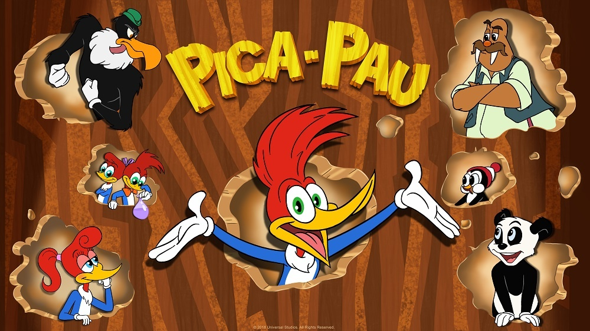

PicaPau
O Pica-Pau (Woody Woodpecker, no original) é um personagem clássico da animação americana, criado em 1940 pelo cartunista Walter Lantz e o animador Ben Hardaway. Ele se tornou um dos personagens mais famosos da história dos desenhos animados.
Peixonauta
Peixonauta é um desenho animado brasileiro sobre um peixe agente secreto que usa um traje especial cheio de água para viver fora do mar. Ele trabalha para a O.S.T.R.A., uma organização que protege o meio ambiente, e recebe missões por meio de uma esfera mágica chamada POP.

Bob Esponja
O Bob Esponja é uma esponja do mar amarela que vive no fundo do oceano, na Fenda do Biquíni. Ele mora dentro de um abacaxi e trabalha como cozinheiro no Siri Cascudo, um restaurante de fast food famoso por seu lanche, o Hambúrguer de Siri.

Princesa Sofia
A Sofia era uma menina comum até que sua mãe se casou com o rei, e ela virou princesa do reino de Encântia. Agora, Sofia precisa aprender como é ser uma princesa, estudar na Escola de Princesas e lidar com desafios com bondade, coragem e amizade.

Ben 10
O Ben Tennyson é um garoto de 10 anos que encontra um relógio alienígena chamado Omnitrix. Esse relógio se prende ao braço dele e permite que ele se transforme em diferentes alienígenas, cada um com poderes únicos (como fogo, superforça, velocidade, etc.).